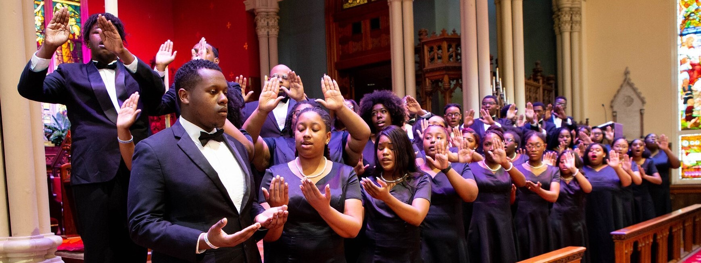

From the long-running holiday concert to performing at the White House, the renowned Dillard University Concert Choir has an extensive history going back to the beginning of Dillard in 1935. View the timeline that highlights just a few significant moments in the history of the Dillard University Concert Choir, as well as several other choir groups at Dillard.
The Dillard University Concert Choir presents the 86th Annual Holiday Concert.
Sunday, December 4, 2022
Doors Open at 5:45pm; Concert Starts at 7pm
Lawless Memorial Chapel